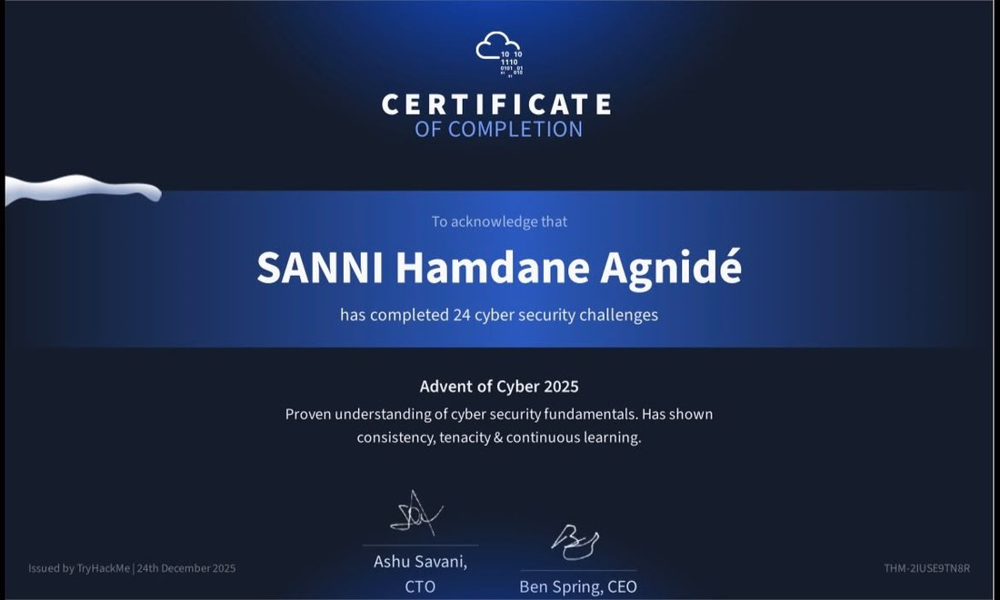
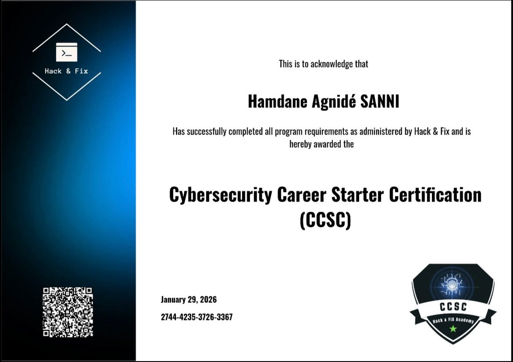
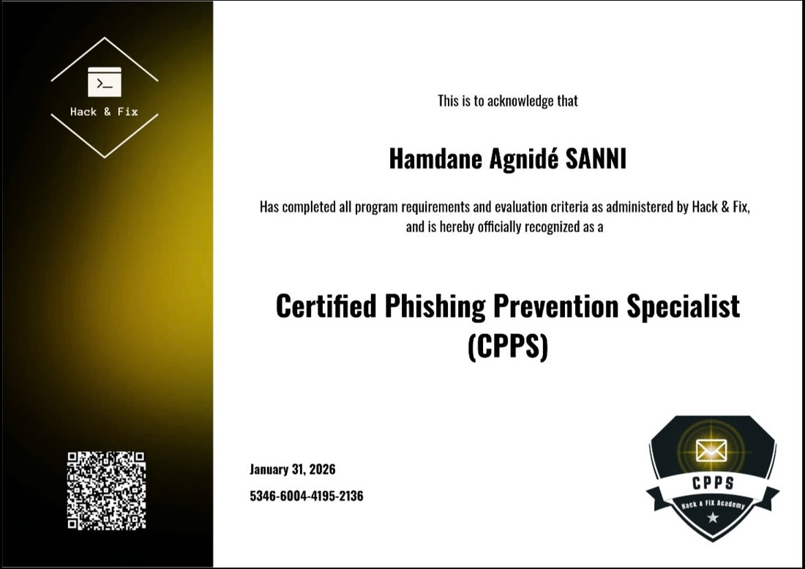
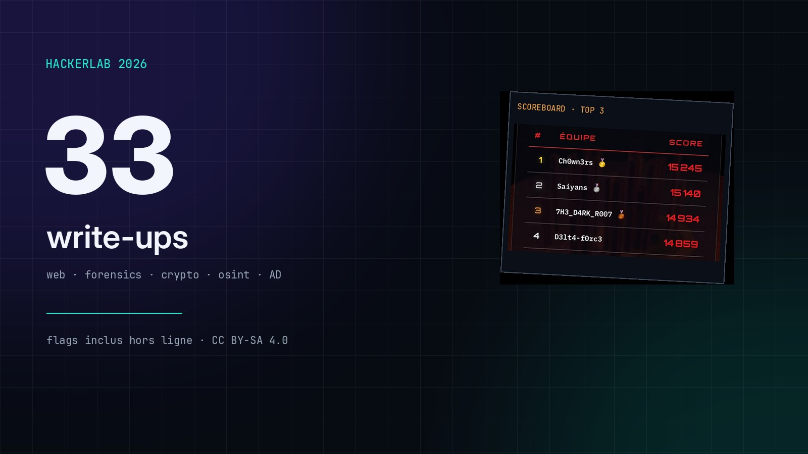
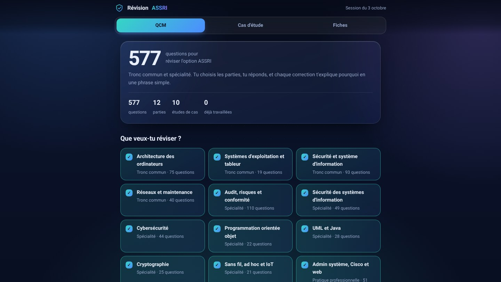
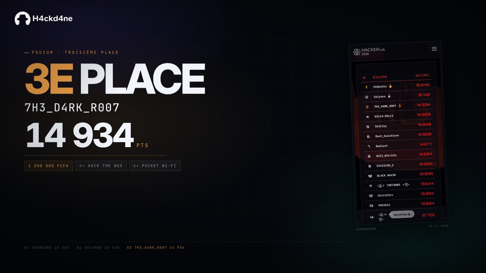
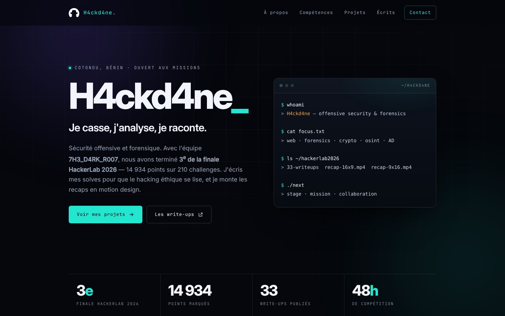

Web & API
Injections, logique métier, SSRF, authentification, chaînes d'exploitation.
Cotonou, Bénin · ouvert aux missions
SANNI Hamdane
J'analyse, je casse, je construis.
Sécurité offensive, forensique et développement web. J'audite des applications, j'analyse des artefacts, et je construis des outils lisibles — des write-ups aux interfaces. Finaliste du HackerLab 2026 avec l'équipe 7H3_D4RK_R007.
$ whoami
> H4ckd4ne — sécurité offensive & forensics
$ cat focus.txt
> web · forensics · crypto · osint · dev
$ ls ~/projets
> revision-assri write-ups portfolio
$ ./next
> stage · mission · collaborationJe suis SANNI Hamdane, alias H4ckd4ne. Je travaille à la frontière entre la sécurité offensive, l'analyse forensique et le développement web : comprendre comment un système cède, puis construire ce qui le rend lisible.
Mon terrain de jeu : le web, les artefacts Windows, la cryptographie, l'OSINT et l'Active Directory. Je documente mes analyses en write-ups reproductibles : commandes exactes, impasses, raisonnement.
Côté produit, je conçois et développe des interfaces : une application de révision pour l'examen ASSRI (577 questions), ce portfolio, et des recaps vidéo en motion design. La compétition fait partie du parcours — pas du titre.
2026 · Compétition
Finale nationale de cybersécurité à Cotonou, 48 heures, 210 challenges. Avec 7H3_D4RK_R007 : 14 934 points, troisième marche du podium.
2026 · Produit
Conception et développement d'une app de révision pour l'examen national de licence : 577 QCM, 12 parties, 10 études de cas et des fiches.
2026 · Certifications
Cybersecurity Career Starter Certification et Certified Phishing Prevention Specialist, obtenues en janvier 2026.
2025 · Formation
24 challenges de sécurité complétés : fondamentaux, exploitation, défense.
Injections, logique métier, SSRF, authentification, chaînes d'exploitation.
Disques et images, prefetch, journaux, timelines, corrélation d'artefacts.
RSA, AES, protocoles maison, oracles, réutilisation de nonce.
Pseudonymes, géolocalisation, recoupement de sources, vérification.
Énumération, délégations, chemins d'attaque, mouvements latéraux.
Sites statiques, React/Remotion, FFmpeg, interfaces accessibles.

24 challenges de sécurité complétés : fondamentaux, exploitation, défense.
Certificat de complétion
Programme complet de fondamentaux : réseaux, systèmes, hygiène de sécurité.
ID 2744-4235-3726-3357
Analyse des campagnes d'hameçonnage, indicateurs et prévention.
ID 5346-6004-4195-2136
Une sélection de 33 challenges résolus pendant la finale : web, forensics, crypto, OSINT et Active Directory. Même trame partout : contexte, hypothèses, commandes, impasses, validation.
Ouvrir le dépôt
Application de révision pour l'examen national de licence ASSRI : 577 QCM, 12 parties, 10 études de cas et des fiches. Chaque correction explique le pourquoi en une phrase.
Ouvrir l'application
Un recap de 58 secondes conçu sous Remotion : titre cinétique, compteurs, reconstruction du podium et du scoreboard, sound design. Deux masters rendus, un pour le web et un pour les réseaux.
Voir sur GitHub
Site statique sans dépendance : polices auto-hébergées, contrastes AA,
navigation clavier, respect de prefers-reduced-motion.
Déployé sur GitHub Pages.
cipher.exe a-t-il tourné pour la première fois ?
Forensics
20 nov. 2026
D'un pseudonyme à une ville
Comment un simple handle suffit à remonter une piste — et pourquoi la
vérification compte plus que la collecte.
OSINT
22 nov. 2026
Trois leçons d'une finale CTF de 48 heures
Ce qui fait la différence entre une équipe qui score et une équipe qui
s'épuise : notes, temps, et relecture.
Méthode
Disponible
Stage, mission de pentest, analyse forensique ou simple échange autour du CTF : le plus direct reste WhatsApp ou l'email, et GitHub pour les détails techniques. Je réponds vite.